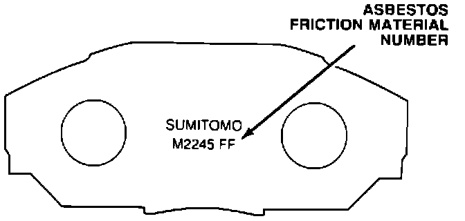
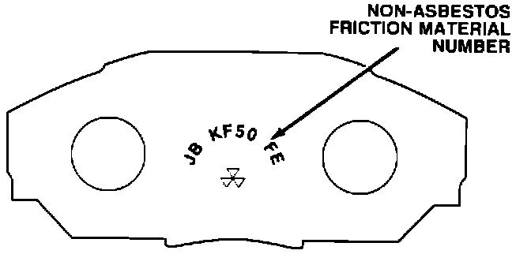
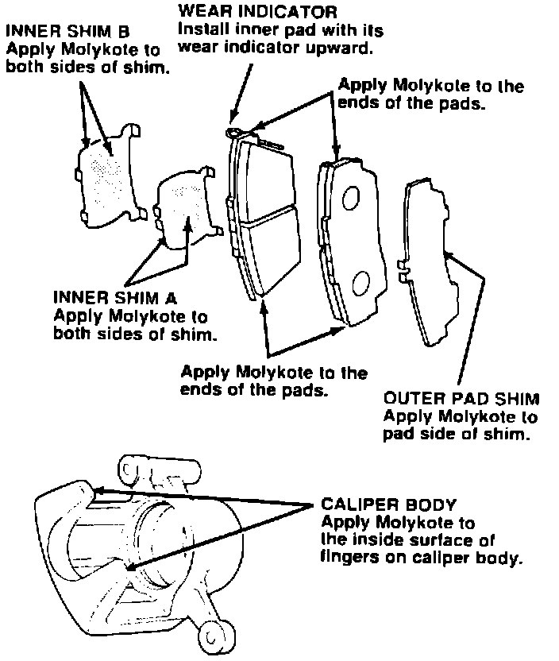

Brakes - Front Brake Pad Selection
June 27, 1988BULLETIN NO: 88-015
YEAR '87-'88
MODEL LEGEND COUPE
VIN APPLICATION ALL
Legend Coupe Front Brake Pad Selection
SUBJECT
Replacement front brake parts for '87-88 Legend Coupes are available with either asbestos or nonasbestos friction material. Install whichever type best suits the individual driver's needs.

The original equipment brake pads use an asbestos friction material, which gives a better pedal feel, but is more prone to moan or squeal when subjected to severe usage. These pads are numbered "M2245 FF" on the back.

The optional, non-asbestos friction material brake pads offer increased service life under severe braking, and are less likely to make noise. These pads are numbered "JB KF50 FE" on the back.

Apply Molykote M77 thinly and evenly as shown:
make sure it doesn't contaminate the friction material.
Break in the new pads by lightly applying the brakes and decelerating from 35 MPH to a complete stop. Do this 20 times.
PARTS INFORMATION
M2245 FF brake pads (original-equipment type):
P/N 45022-SC10-010
JB KF50 FE brake pads (optional type):
P/N 45022-SG0-305